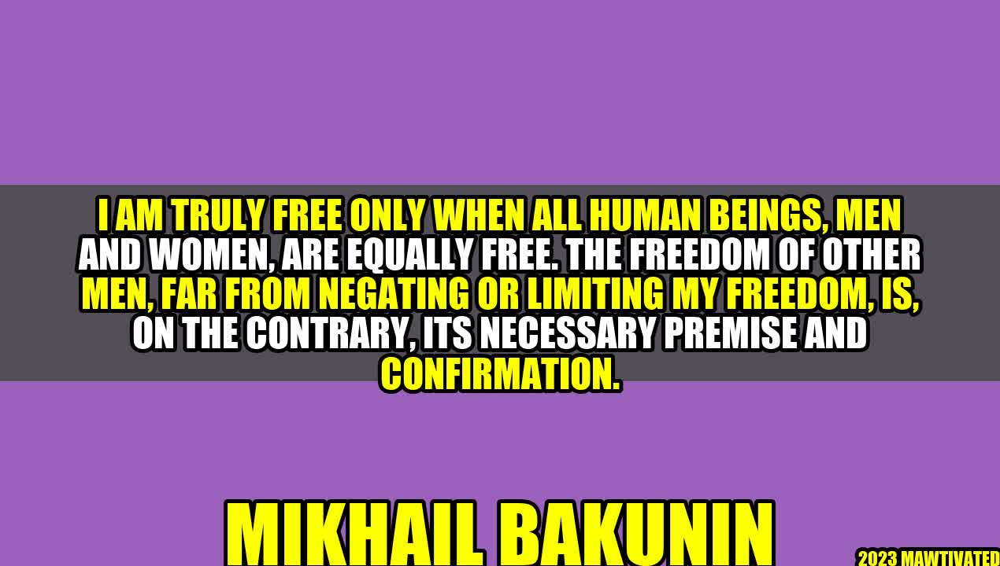

From Freedom for One to Freedom for All – The Necessary Premise and Confirmation of True Freedom

An Inspiring Story
It was a bright morning in a small village in rural India when Aruna woke up and set out to collect firewood for her family. She had to walk for hours to reach the nearby woods, and her task was to bring back enough firewood to last her family for the entire week. As she walked, she saw a group of people gathered in the village square, arguing and shouting at each other. She could sense the tension in the air, and it made her nervous. She asked one of the villagers what was going on, and the man told her that there was a dispute between two families over a piece of land, and the matter had turned violent. The police had been called, but they were yet to arrive. Aruna knew that she had to hurry back home with the firewood, but she couldn't shake off the feeling of unease that the scene in the village square had left her with. As she walked back, she kept thinking about the incident and couldn't help but feel that there was something fundamentally wrong with the way people behaved when they were in conflict with each other. It was as if they had forgotten that they were all human beings, and that their actions affected not just themselves but others around them too. As she reached her home and started preparing the fire, she realized that she had found her calling. She wanted to work towards creating a world where everyone had the freedom to be themselves, without fear of violence or discrimination. And with that thought, she set out on a journey that would change her life and the lives of many others who crossed her path.
The Background of the Author – Mikhail Bakunin
Mikhail Bakunin was a Russian revolutionary anarchist and a major figure in the history of political philosophy. He was born on May 18, 1814, in the town of Pryamukhino, Russia, and was the sixth of eleven children. From an early age, he was interested in politics and was known for his rebellious nature. He was expelled from school for writing a radical article, and later, he began to actively participate in revolutionary activities. Bakunin believed that true freedom could only be achieved when all human beings were equally free. He argued that the freedom of one person was not enough, and that the freedom of others was a necessary premise and confirmation of true freedom. He was a firm believer in the idea of collectivism, and he wanted to create a society where people would work together and share resources equally.
Examples of the Freedom of One being the Necessary Premise and Confirmation of True Freedom
One of the best examples of the freedom of one being the necessary premise and confirmation of true freedom is the civil rights movement in the United States. In the 1950s and 1960s, African Americans were subjected to discrimination and segregation, and their freedom was severely limited. However, a small group of people, led by Martin Luther King Jr. and Rosa Parks, stood up against this injustice and fought for their right to be free. Their actions had a ripple effect, and soon, millions of people across the country joined the movement. The government was forced to take notice, and they passed several laws that guaranteed civil rights for all Americans, regardless of their race. The freedom of African Americans was not just their own; it was a necessary premise and confirmation of true freedom for everyone. Another example is the feminist movement, which began in the 19th century and continues to this day. Women were denied basic rights, such as the right to vote, the right to own property, and the right to work outside the home. However, a small group of women, led by Susan B. Anthony and Elizabeth Cady Stanton, fought for their freedom and paved the way for future generations of women to enjoy the same rights as men. The freedom of women was not just their own; it was a necessary premise and confirmation of true freedom for all human beings. Women's rights are human rights, and their fight for freedom has benefitted everyone, regardless of their gender.
Conclusion – Three Key Points
1. True freedom can only be achieved when all human beings are equally free. The freedom of one person is not enough; it is a necessary premise and confirmation of true freedom for everyone. 2. All forms of discrimination and oppression limit freedom, not just for the oppressed, but for everyone. The fight for freedom is a collective one, and we must work together to create a world where everyone can be themselves without fear of violence or discrimination. 3. The path to true freedom is a long and difficult one, but it is worth fighting for. We must stand up against injustice, no matter how small, and work towards creating a world where everyone can live in peace, harmony, and freedom.
Hashtags, SEO Keywords, Article Category
Hashtags: #TrueFreedom #Collectivism #CivilRights #Feminism #HumanRights SEO Keywords: True Freedom, Collectivism, Civil Rights, Feminism, Human Rights Article Category: Politics & Society
Curated by Team Akash.Mittal.Blog
Curated by Team Akash.Mittal.Blog
Share on Twitter Share on LinkedIn